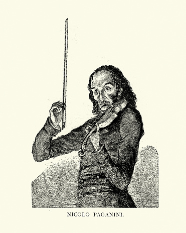

El violín
El violín, es un instrumento increíble y maravilloso que ha formado parte de nuestra civilización por tantos siglos; es admirado por los sonidos que pueden interpretarse cuando se tocan sus cuerdas. Las personas observando su madera y sus colores clásicos, sienten atracción por esta caja musical, e incluso muchos comenzando clases, se atreven a querer poder tocarlo, aunque a veces poco se sepa de este mismo. Es por eso que mediante esta pequeña página, se quiere dar a conocer características únicas que datan desde la historia, partes del violín y algunos artistas que han logrado cautivarnos con sus maravillosas melodías.
Historia
El violín surgió en Italia a comienzos del Siglo XVI. Parece haber evolucionado a partir de dos instrumentos de cuerda frotada: la fídula, también denominada viella y rebec, y la lira da braccio (instrumento como el violín con bordones separados del diapasón). También relacionado con el violín pero no un antecedente directo, es la viola da gamba, instrumento de seis cuerdas con trastes que apareció en Europa antes que el violín y existió junto con él durante unos 200 años. Los más importantes violeros fueron los italianos Gasparo (Bertolotti) da Salò y Giovanni Maggini de Brescia y Andrea Amati de Cremona. El arte de la construcción del violín brilló con gran intensidad en el Siglo XVII y comienzos del XVIII en los talleres de los italianos Antonio Stradivarius y Giuseppe Guarneri, ambos de Cremona y del austriaco Jacob Stainer. Comparado con los instrumentos modernos, el violín antiguo tenía un mango más grueso, menos inclinado hacia atrás, un diapasón más corto, un puente más bajo y cuerdas hechas sólo de tripa. Los arcos antiguos eran algo diferentes en su diseño de los actuales. Estas características constructivas fueron modificadas en los siglos XVIII y XIX para producir un sonido más duro y brillante. Varios violinistas del Siglo XX han restaurado y empleado instrumentos del siglo XVIII por considerarlos más adecuados para interpretar la música antigua.
Partes
Artistas
Nicolo Paganini
(Génova, 1782 - Niza, 1840) Violinista, guitarrista y compositor italiano. Rodeado de una aureola mefistofélica por sus propios contemporáneos, asombrados ante su dominio del instrumento y su vida desordenada y aventurera, Niccolò Paganini fue el violinista por antonomasia del romanticismo.
David Garrett
David Bongartz (4 de septiembre de 1980) Nació en Aquisgrán, Alemania. Violinista y modelo alemán, es conocido con el nombre artístico de David Garrett. Hijo de David Garrett y Dove Garrett, su padre es jurista y profesor de violín y su madre es bailarina. David Garret se crió rodeado de la música y desde temprana edad se interesa por esta, al observar a su hermano mayor tocar el violín nace su pasión por el instrumento, el cual aprendió a interpretar desde los 4 años, fue instruido por su padre.